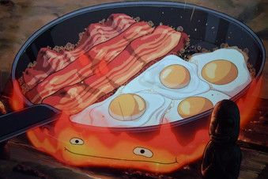

Bacon and eggs

Description
Bacons and eggs are a delicious meal, that can be served at any time in the day.
Ingredients
- Unsalted smoked bacon
- Fresh farm eggs
- Salt, pepper
- Olive oil
Steps
- Get the pan to hot, just not super hot, then put a tablespoon of olive oil in it. Wait for the oil to warm up
- Put as much bacon as u want, bacon is delicious, wait for it to start to become crispy
- Before the bacon is too crispy crack the eggs and put them in the pan, don't salt immediatly, but you can put the peppter in
- Once the white is ferm, and the yolks are nice and shiny, salt, and serve immediatly on a plate